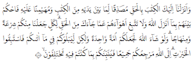
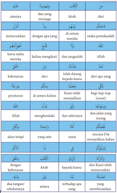
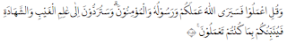
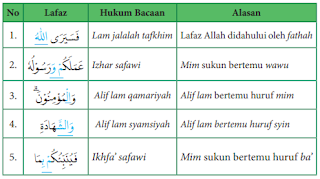
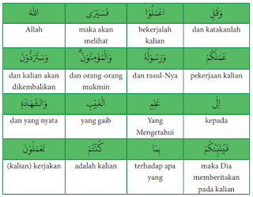

Bab 1. Meraih Kesuksesan dengan Kompetisi dalam Kebaikan dan Etos Kerja
1. Q.S. al-Maidah/5: 48 tentang Kompetisi dalam Kebaikan
a. Membaca Q.S. al-Maidah/5:48
b. Mengidentifikasi Hukum Bacaan Tajwid Q.S. al-Maidah/5:48
.PNG)
c. Mengartikan per Kata Q.S. al-Maidah/5:48
d. Menterjemahkan Ayat Q.S. al-Maidah/5: 48
"Dan kami telah menurunkan Kitab (Al-Qur'an) kepadamu (Muhammad) dengan membawa kebenaran, yang membenarkan kitab-kitab yang diturunkan sebelumnya dan menjaganya, maka putuskanlah perkara mereka menurut apa yang diturunkan Allah dan janganlah engkau mengikuti keinginan mereka dengan meninggalkan kebenaran yang telah datang kepadamu. Untuk setiap umat di antara kamu, Kami berikan aturan dan jalan yang terang. Kalau Allah menghendaki, niscaya kamu dijadikan-Nya satu umat (saja), tetapi Allah hendak menguji kamu terhadap karunia yang telah diberikan-Nya kepadamu, maka berlomba-lombalah berbuat kebajikan. Hanya kepada Allah kamu semua kembali, lalu diberitahukan-Nya kepadamu terhadap apa yang dahulu kamu perselisihkan." (Q.S. al-Maidah/5:48).
e. Asbabun Nuzul Q.S. al-Maidah/5:48
Tidak ada sebab khusus yang melatarbelakangi turunnya Q.S. al-Maidah/5:48. Surat al-Maidah termasuk golongan surat Madaniyah, yakni surat yang turun setelah hijrahnya Nabi. Menurut riwayat Imam Ahmad, surat ini turun saat Nabi Saw. sedang menunggang unta. Tidak ada sebab khusus yang melatarbelakangi turunnya Q.S. al-Maidah/5: 48. Surat al-Maidah termasuk golongan surat Madaniyah, yakni surat yang turun setelah hijrahnya Nabi. Menurut riwayat Imam Ahmad, surat ini turun saat Nabi Saw. sedang menunggang unta
f. Menelaah Tafsir Q.S. al-Maldah/5: 48
Menurut tafsir al-Misbah, Q.S. al-Maidah/5: 48 mengandung pesan-pesan mulia sebagal berikut:
- Al-Qur'an diturunkan oleh Allah Swt. dengan haq (kebenaran), yakni haq dalam kandungannya, cara turunnya, maupun yang mengantarnya turun (Jibril a.s.).
- Kitab Al-Qur'an berfungsi membenarkan kitab-kitab sebelumnya, yakni Taurat yang diturunkan kepada Nabi Musa a.s.. Zabur yang diturunkan kepada Nabi Daud a.s., dan Injil yang diturunkan kepada Nabi Isa a.s. Dalam hal ini Al-Qur'an adalah muhaimin terhadap kitab-kitab terdahulu karena ia menjadi saksi atas kebenaran kandungan kitab- kitab terdahulu.
- Kitab suci Al-Qur'an juga menjadi pengawas, pemelihara, penjaga kitabkitab terdahulu dan menjadi tolok ukur kebenaran terhadapnya, serta menjadi saksi untuk keabsahannya. Dalam kedudukannya sebagai pemelihara, Al-Qur'an memelihara dan mengukuhkan prinsip ajaran Ilahi yang bersifat universal (kully) dan mengandung kemaslahatan abadi bagi umat manusia sepanjang masa.
- Allah Swt. memerintahkan agar menjadikan Al-Qur'an sebagai pedoman hidup. Hendaklah orang beriman memutuskan perkara berdasarkan kitab suci Al-Qur'an dan tidak boleh bertentangan dengannya. Bahkan dalam Q.S. al-Maidah/5: 3 dinyatakan bahwa agama Islam telah sempurna, nikmat yang diturunkan oleh Allah Swt. kepada kaum muslimin sudah sempurna, dan Allah Swt. telah meridal Islam sebagai jalan kehidupan semua manusia. Maka tidak ada lagi alasan untuk meninggalkan sebagian ajarannya untuk berpindah pada ajaran lain.
- Tiap-tiap umat memiliki aturan (syariat) yang akan menuntunnya menuju kebahagiaan abadi. Allah Swt. juga mengkaruniakan jalan terang (manhaj) yang dilalui oleh manusia dalam menjalankan aturan beragama.
- Allah Swt. telah menjadikan syariat Nabi Muhammad Saw. sebagai penyempurna syariat para nabi terdahulu serta membatalkan syariat sebelumnya. Seandainya Allah Swt. menghendaki, niscaya umat Nabi Musa a.s., Nabi Isa a.s., dan umat Nabi Muhammad Saw. akan dijadikan satu umat saja. Tetapi hal ini tidak dikehendaki oleh Allah Swt.
- Umat Islam diperintahkan untuk berlomba-lomba dengan sungguhsungguh dalam berbuat kebaikan dan menghindari perdebatan yang tidak perlu hingga menghabiskan waktu sia-sia. Allah Swt. telah menetapkan berbagai macam syariat untuk menguji siapakah di antara hamba-Nya yang taat dan durhaka. Bagi yang taat akan memperoleh pahala, sedangkan siksa bagi seseorang yang durhaka, Sesungguhnya semua manusia akan kembali kepada Allah Swt. dan akan diberitahukan apa yang telah diperselisihkan. Hal yang diperselisihkan ini adalah tentang kehidupan akhirat. Orang-orang kafir tidak percaya adanya akhirat. Karenanya mereka akan diberitahu dan mendapatkan balasan atas perbuatan mereka, yakni dimasukkan ke dalam api neraka. Sedangkan bagi orang mukmin yang beramal shalih, akan mendapatkan balasan surga.
2. Q.S. at-Taubah/9: 105 tentang Etos Kerja
a. Membaca Q.S. at-Taubah/9: 105
b. Mengidentifikasi Hukum Bacaan Tajwid Q.S. at-Taubah/9: 105
c. Mengartikan Per Kata Q.S. at-Taubah/9:105
d. Menterjemahkan Ayat Q.S. at-Taubah/9: 105
"Dan katakanlah, "Bekerjalah kamu, maka Allah akan melihat pekerjaanmu, begitu juga Rasul- Nya dan orang-orang mukmin, dan kamu akan dikembalikan kepada (Allah) Yang Mengetahui yang gaib dan yang nyata, lalu diberitakanNya kepada kamu apa yang telah kamu kerjakan." (Q.S. at-Taubah/9: 105)
e. Asbabun Nuzul Q.S. at-Taubah/9: 105
Tidak ada sebab khusus yang melatarbelakangi turunnya Q.S. at-Taubah/9: 105 ini. Perlu diketahui bahwa ayat 105 terkait dengan ayat sebelumnya, yakni ayat 102-104. Pada ayat 102- 104, Allah Swt. menganjurkan bertaubat dan melakukan kegiatan nyata, antara lain membayar zakat dan bersedekah. Pada ayat 105, Allah Swt. memerintahkan untuk melakukan beragam aktivitas lain, baik yang nyata maupun tersembunyi. Menurut kitab Lubabun Nuqul fii Asbaabin Nuzul Seusai berperang, Rasulullah Saw. bertanya: "siapakah orang-orang yang terikat di tiang ini?", ada seseorang menjawab: "mereka adalah Abu Lubabah dan teman-temannya yang tidak ikut berperang. Mereka bersumpah tidak akan melepaskan ikatan tersebut, kecuali Rasulullah sendiri yang melepaskannya". Kemudian Rasulullah Saw. bersabda: "aku tidak akan melepaskan mereka kecuali jika diperintahkan oleh Allah Swt." Karenanya Allah Swt. menurunkan Q.S. at-Taubah/9: 102, kemudian Rasulullah Saw. melepaskan dan memaafkan mereka.
f. Menelaah Tafsir Q.S. at-Taubah/9: 105
Menurut tafsir al-Misbah, ayat ini mendorong manusia untuk lebih mawas diri dan mengawasi amal atau pekerjaan mereka.
Selanjutnya simaklah pesan-pesan mulia yang terkandung dalam Q.S. at-Taubah/9:105 berikut ini.
- Allah Swt. memerintahkan untuk beramal saleh hingga manfaatnya bisa dirasakan oleh diri sendiri maupun masyarakat luas. Amal tersebut harus dilakukan dengan ikhlas karena mengharap rida dari Allah Swt.
- Setiap amal akan dilihat oleh Allah Swt., Rasulullah Saw. dan mukminin di akhirat kelak. Lalu akan dibalas sesuai amal tersebut, jika amalnya baik maka mendapat pahala, sebaliknya jika amalnya buruk maka akan dibalas dengan siksa. Karenanya seorang muslim haruslah memperbanyak amal saleh ketika hidup di dunia.
- Janganlah merasa amalnya sudah cukup banyak untuk bekal hidup di akhirat. Sifat ini akan menghambat munculnya keinginan untuk beramal saleh lagi. Tumbuhkan inisatif untuk melakukan amal saleh sehingga orang lain ikut tergerak untuk melakukannya. Pahala berlipat akan diberikan oleh Allah Swt. kepada orang yang memberi contoh tanpa mengurangi pahala mereka yang mencontoh.
- Setiap manusia akan kembali ke kampung akhirat, dan menerima balasan amal perbuatannya. Seorang mukmin hendaklah jangan larut dengan gemerlap kehidupan duniawi hingga melalaikan akhirat yang kekal abadi.
'Kerja' dalam bahasa Arab disebut dengan 'amala -ya'malu dan yang seakar dengan kata tersebut. Di dalam Al-Qur'an, kata-kata yang berarti 'bekerja' diulang sebanyak 412 kali dan seringkali dihubungkan dengan pekerjaan yang saleh atau amal saleh. Amal saleh yaitu pekerjaan yang membawa kebaikan, baik bagi pelakunya maupun orang lain. Kebaikan tersebut dapat berupa perbaikan ekonomi, kesejahteraan, kesehatan, pendidikan, sosial, spiritual dan sebagainya. Kebaikan tersebut meliputi kebaikan hidup di dunia dan akhirat.
Bab 2 Memahami Hakikat dan Mewujudkan Ketauhidan dan dengan Syu'abul (Cabang) Iman.
1. Definisi Iman
Pada dasarnya, setiap manusia dilahirkan dengan memiliki fitrah tentang keyakinan adanya zat yang Maha Kuasa. Keyakinan ini dalam istilah agama disebut dengan iman. Dalam hal ini manusia telah menyatakan keimanannya kepada Allah Swt. sejak masih berada di alam ruh. Sebagaimana yang tersebut QS.al-A'raf/7: 172 berikut ini:
.PNG)
Artinya: Dan (ingatlah) Ketika Tuhanmu mengeluarkan dari sulbi (tulang belakang) anak cucu Adam keturunan mereka dan Allah Swt mengambil kesaksian terhadap roh mereka (seraya berfirman) "Bukankah Aku ini Tuhanmu?" Mereka menjawab, "Betul (Engkau Tuhan kami), kami bersaksi" (Kami lakukan yang demikian itu) agar di hari kiamat tidak mengatakan,"sesungguhnya ketika itu kami lengah terhadap ini"
Iman berasal dari bahasa Arab dari kata dasar amana-yu'minu - imanan, yang berarti beriman atau percaya. Adapun definisi iman menurut bahasa berarti kepercayaan, keyakinan, ketetapan atau keteguhan hati.
Enam pilar iman itu antara lain adalah:
- iman kepada Allah Swt
- meyakini adanya rasul-rasul utusan Allah Swt.
- mengimani keberadaan malaikat-malaikat Allah Swt.
- meyakini dan mengamalkan ajaran-ajaran suci dalam kitab-kitab-Nya.
- meyakini akan datangnya hari akhir dan
- mempercayai gada dan qadar Allah Swt.
2. Definisi Syu'abul Iman
Menurut Syeikh Muhammad Nawawi bin Umar al-Jawi dalam kitab Qamiuth-Thughyan 'ala Manzhumati Syu'abu al-Iman, iman yang terdiri dari enam pilar seperti tersebut di atas, memiliki beberapa bagian (unsur) dan perilaku yang dapat menambah amal manusia jika dilakukan semuanya, namun juga dapat mengurangi amal manusia apabila ditinggalkannya
Terdapat 77 cabang iman, di mana setiap cabang merupakan amalan atau perbuatan yang harus dilakukan oleh seseorang yang mengaku beriman (mukmin). Tujuh puluh tujuh cabang itulah yang disebut dengan syu'abul iman. Bilamana 77 amalan tersebut dilakukan seluruhnya, maka telah sempurnalah imannya, namun apabila ada yang ditinggalkan, maka berkuranglah kesempurnaan imannya.
3. Dalil Naqli tentang Syu'abul Iman
Amalan-amalan yang merupakan cabang dari iman sebagaimana sabda Rasulullah Muhammad Saw. yang diriwayatkan oleh Muslim dan Abu Hurairah RA:
.PNG)
Artinya: Dari Abu Hurairah ra berkata, Rasulullah Saw. bersabda: Iman itu 77 (tujuh puluh tujuh) lebih cabangnya, yang paling utama adalah mengucapkan laa ilaha illallah, dan yang paling kurang adalah menyingkirkan apa yang akan menghalangi orang di jalan, dan malu itu salah satu dari cabang iman (HR. Muslim).
Sabda Rasulullah Saw. yang lain terkait dengan cabang-cabang iman adalah sebagai berikut:
4. Macam-macam Syu'abul Iman
Terdapat beberapa ahli hadis yang menulis risalah mengenai syu'abul iman atau cabang- cabang iman. Di antara para ahli hadis tersebut adalah:
- a. Imam Baihaqi RA yang menuliskan kitab Syu'bul Iman;
- b. Abu Abdilah Halimi RA dalam kitab Fawaidul Minhaj:
- c. Syeikh Abdul Jalil RA dalam kitab Syu'bul Iman:
- d. Imam Abu Hatim RA dalam kitab Washful Iman wa Syu'buhu
Para ahli hadis ini menjelaskan dan merangkum 77 cabang keimanan tersebut menjadi 3 kategori atau golongan berdasarkan pada hadis Ibnu Majah berikut ini:
.PNG)
Artinya:"Dari Ali bin Abi Thalib ra, berkata, Rasulullah Saw bersabda: iman adalah tambatan hati, ucapan lisan dan perwujudan perbuatan" (H.R. Ibnu Majah).
Dengan kata lain, dimensi dari keimanan itu menyangkut tiga ranah yaitu:
- Ma'rifatun bil qalbi yaitu meyakini dengan hati
- Igrarun bil lisan yaitu diucapkan dengan lisan
- 'Amalun bil arkan yaitu mengamalkannya dengan perbuatan anggota badan
Dari pengelompokan berdasarkan dimensi keimanan tersebut, maka syu'abul iman dibagi menjadi tiga bagian yang meliputi:
- Niat, akidah dan hati:
- Lisan / ucapan
- Seluruh anggota badan;
5. Tanda-tanda Orang yang Beriman
Adapun tanda-tanda orang yang beriman, di antaranya dijelaskan dalam sebagai berikut.
- Jika mendengar nama Allah Swt. disebut, maka bergetar hatinya, dan jika dibacakan ayat-ayat Al-Qur'an maka bergejolak hatinya untuk segera mengamalkannya
"Sesungguhnya orang-orang yang beriman adalah mereka yang apabila disebut nama Allah Swt. gemetar hatinya, dan apabila dibacakan ayatayat-Nya kepada mereka, bertambah (kuat) imannya dan hanya kepada Tuhan mereka bertawakkal"
- Senantiasa bertawakal setelah bekerja keras dan berdoa kepada Allah Swt
Hal ini dijelaskan dalam QS. at-Taghabun/64: 13
"(Dialah) Allah Swt, tidak ada Tuhan selain Dia. Dan hendaklah orangorang mukmin bertawakkal kepada Allah Swt"
- Selalu tertib dalam menegakkan dan menjalankan salatnya
Seorang mukmin, seberapa pun sibuk dengan aktivitas dan urusan duniawinya, ia akan senantiasa memprioritaskan ibadah dan salat untuk menjaga kualitas imannya. Sebagaimana yang disebutkan dalam QS. alMukminun/23: 2 berikut ini:
Sungguh beruntung orang-orang yang beriman (1) (yaitu) orang yang khusyuk dalam salatnya (2)
- Menafkahkan sebagian rezeki dan hartanya di jalan Allah Swt.
Seorang mukmin memiliki keyakinan bahwa harta yang dinafkahkan di jalan Allah Swt. merupakan wujud implementasi keimanan untuk pemerataan ekonomi, agar tidak terjadi kesenjangan antara aghniya dan dhuafa. Sebagaimana firman Allah Swt. dalam QS.al-Anfal/8: 3 sebagai berikut:
(yaitu) orang-orang yang melaksanakan salat dan menginfakkan sebagian dari rezeki yang kami berikan kepada mereka.
- Menghindari perkataan yang tidak berguna.
Seorang mukmin akan selalu mempertimbangkan sesuatu sebelum mengucapkannya. Apabila ucapannya bermanfaat, maka akan ia lanjutkan perkataannya, namun apabila mendatangkan madlarat maka ia akan menghindarinya. Hal ini sesuai dengan firman Allah Swt. QS. alMukminun/23: 3-5 berikut ini:
Dan orang-orang yang menjauhkan diri dari (perbuatan dan perkataan) yang tidak berguna.
- Memelihara amanah dan menepati janji
Seorang mukmin, akan senantiasa memegang amanah dan menepati janji yang telah dibuatnya serta tidak akan berkhianat kepada siapapun yang mempercayainya. Hal ini sesuai dengan firman Allah Swt. dalam QS, alMukminun/23: 6 berikut ini:
Sesungguhnya Allah Swt. Menyuruhmu menyampaikan amanat kepada yang berhak menerimanya, dan apabila kamu menetapkan okum di antara manusia, hendaknya kamu menetapkannya dengan adil. Sungguh Allah Swt. Sebaik-baik yang memberi pengajaran kepadamu, Sungguh Allah Maha Mendengar dan Maha Melihat
- Berjihad di jalan Allah Swt
Dengan jiwa dan harta yang dimiliki Makna jihad bagi seorang muslim dalam hal ini bukanlah jihad dan mengangkat senjata di medan pertempuran semata. Juga bukanlah jihad yang secara ekstrim menyatakan permusuhan kepada orang-orang atau golongan yang tidak sepaham dengannya. Tetapi jihad dalam hal ini adalah bersungguh-sungguh dalam menegakkan ajaran Allah Swt. baik dengan harta, benda maupun nyawa yang dimilikinya. Sebagai contoh jihadnya seorang pelajar adalah kesungguhannya menuntut ilmu. Jihadnya seorang guru adalah kesungguhannya mendidik siswanya, dan lain sebagainya. Hal tersebut sesuai dengan QS. at-Taubah/9; 41 yaitu:
6. Problematika Praktik Keimanan di Sekitar Kita
Seorang filosof Yunani, Frederick Nietzshe mengatakan bahwa dalam diri manusia yang hanya berburu kepentingan duniawi, maka sesungguhnya Tuhan telah mati. Pernyataan ini tentu beralasan, karena jika Tuhan masih 'hidup' dalam dirinya, manusia pasti tidak akan pernah mematikan dan meninggalkan Tuhan dalam aktivitas kehidupannya.
Pandangan ini, seolah mengisyaratkan bahwa Nietzshe mengkhawatirkan masyarakat yang terus hidup tanpa mengamalkan doktrin keagamaan. Degradasi moral yang semakin tajam di semua lini, baik pendidikan, sosial budaya, politik, hukum dan aspek kehidupan yang lain merupakan penyakit jasmani dan rohani yang sebenarnya menuntut masyarakat untuk kembali ke jalan Tuhan.
Hal ini senada dengan pendapat Abu Bakr bin Laal dalam kitab Makarim al-Akhlaq yang meriwayatkan hadis:
- Dari Anas bin Malik RA, yang berkata bahwa Rasulullah Saw, bersabda, "Setiap mukmin dihadapkan pada lima ujian, yaitu mukmin yang menghasutnya, munafik yang membencinya kafir yang memeranginya, nafsu yang menentangnya, dan setan yang selalu menyesatkannya". (HR. adDhailami)
- Mukmin yang saling mendengki
Contoh riil dalam kehidupan saat ini.
Persaingan politik atau persaingan bisnis yang tidak sehat tidak jarang menimbulkan keinginan untuk menjatuhkan lawan dengan cara-cara yang tidak benar. Tidak sedikit yang kemudian menciptakan berita bohong atau hoax, menebar kebencian atau hate speech kepada lawan politik atau saingan bisnisnya, sehingga hilanglah simpati publik kepada lawan dan sebaliknya ia yang akan mendapat keuntungan.
- Kaum munafik yang membenci kaum mukmin
Contoh rill dalam kehidupan saat ini.
Berkembangnya permusuhan dan perpecahan di kalangan umat Islam, yang disebabkan oleh adu domba yang diciptakan orang-orang munafik. Antara golongan mukmin yang satu dengan golongan mukmin yang lain saling dibenturkan sehingga tidak jarang menimbulkan permasalahan dan keresahan sosial di masyarakat. Sedangkan jika telah terjadi permusuhan, kedua belah pihak akan tetap dirugikan dan orang munafik akan bertepuk tangan karena berhasil menciptakan kebencian dan ia akan mengambil keuntungan di dalamnya.
- Orang kafir yang memerangi kaum mukmin
Contoh kehidupan saat ini:
Berkembang pesatnya dunia teknologi, informasi dan komunikasi semakin menjadikan inovatif dan kreatifnya smart people di Indonesia. Mereka menciptakan berbagai aplikasi hiburan, game online dan lain sebagainya yang sangat praktis dan mudah untuk diakses oleh masyarakat. Namun hal ini tidak diikuti dengan upaya untuk menyaring dan menyeleksi penggunaannya agar tidak melanggar norma dan aturan agama. Wujud perang orang kafir terhadap orang mukmin sebagaimana tersebut di atas adalah semakin merosotnya kualitas iman seseorang, yang lebih menuhankan teknologi informasi komunikasi dan melalaikan norma agama bahkan mulai dari anak kecil, balita, remaja sampai kepada orang tua.
- Tipu muslihat setan yang selalu menyesatkan
Contoh dalam kehidupan saat ini:
Tingginya angka kriminalitas dan tindakan pelanggaran hukum, baik hukum agama maupun hukum positif di negeri ini. Setiap hari media masa dihiasi oleh berita tentang tindak kejahatan yang dilakukan oleh masyarakat mulai dari kejahatan-kejahatan ringan, sedang dan berat dan bahkan disertai dengan tindakan kekerasan juga pembunuhan. Setan menjadi pemenang dalam situasi seperti ini, karena dengan tipu dayanya, setan berhasil menyesatkan manusia, untuk melakukan hal-hal yang tercela dan dilarang oleh ajaran agama.
- Godaan hawa nafsu dari dalam diri setiap mukmin
Contoh dalam kehidupan saat ini:
Seorang mukmin yang telah berjanji kepada dirinya sendiri untuk istiqamah beribadah, berjamaah di masjid, berpuasa sunah, bersedekah, menghindari maksiat, menyantuni anak yatim dan hal-hal lain yang dianjurkan oleh agama sebagai implementasi keimanannya. Akan tetapi jika mukmin tersebut tidak mampu melawan godaan dan bisikan halus dari hawa nafsunya, bisa saja niat mulia tersebut tidak pernah akan terwujud dan bahkan bertolak belakang, yang ia lakukan justru hal-hal yang dilarang oleh
- Iman menghilangkan sifat kepercayaan manusia terhadap makhluk
- Iman menanamkan sikap tidak takut menghadapi kematian
- Iman akan membuat seorang mukmin memiliki jiwa yang tenang
- Iman menumbuhkan sikap ikhlas
- Iman mendatangkan keberuntungan
- Iman mencegah penyakit jasmani dan rohani
Menurut Abu Bakr bin Laal, berdasarkan hadis tersebut setidaknya ada lima ujian keimanan yang dihadapi oleh orang-orang mukmin saat ini yaitu:
7. Hikmah dan Manfaat Syu'abul Iman
Berikut ini, beberapa hikmah dan manfaat serta pengaruh iman pada kehidupan manusia